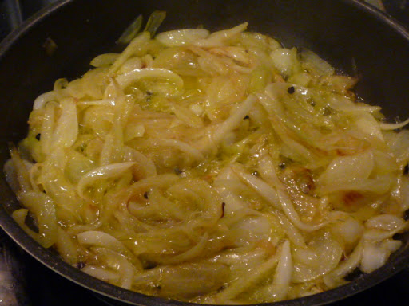
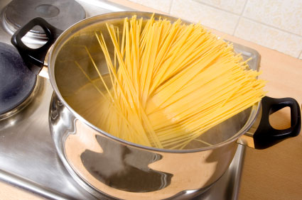

Una salsa vegana para la pasta, tan sabrosa y cremosa que resulta irresistible! Está elaborada con coliflor y con otros ingredientes vegetales, que la convierten en…
VISITA NUESTRO CANAL DE YOUTUBE
INGREDIENTES
500g de pasta
500g de carne picada
2 dientes de ajo
1 cebolla
Un puñado de queso rallado
Sal y pimienta
Aceite
Tiempo estimado de la receta:
30 Minutos
PASOS A SEGUIR
Comenzaremos picando la cebolla menuda así como los dientes de ajo. Limpiamos y cortamos las setas en trozos pequeños.
En una sartén calentamos el aceite y sofreímos la cebolla y el ajo hasta que esté esta última transparente. Añadimos las setas, removemos y las salteamos. Una vez hechas vertemos el vino blanco seco y dejamos que se evapore durante tres o cuatro minutos, añadimos la nata líquida, salpimentamos y dejamos reducir durante diez minutos a fuego suave.

Mientras que se termina de hacer la salsa, ponemos una olla alta con abundante agua con sal al fuego y cocemos la pasta según el tipo e instrucciones del fabricante. La escurrimos y servimos con la salsa bien caliente.

Este plato de pasta con salsa de setas es lo suficientemente contundente, pero si sois muy queseros podeis añadirle parmesano rallado. También un poco de pimienta espolvoreada en fresco le dará un punto especial a la hora de degustarla.